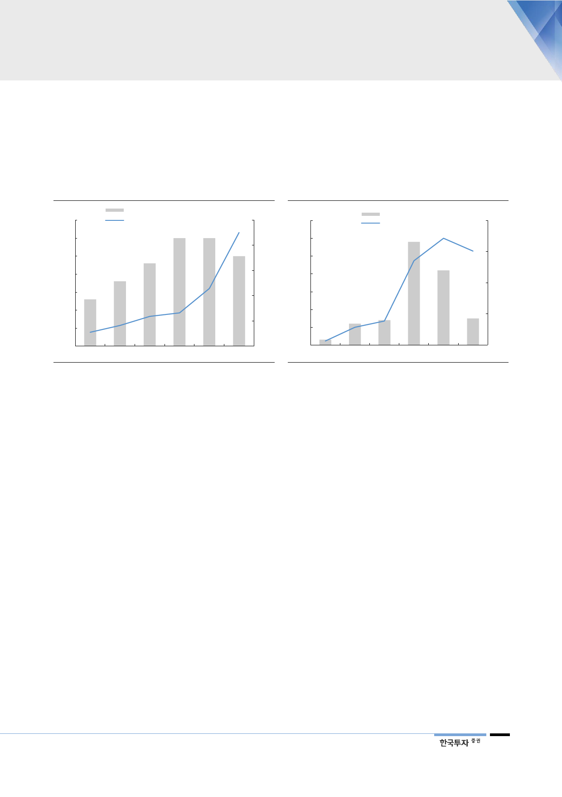

인다. 엔진기술을 내재화함으로써 설계 초기부터 오류를 줄이고 건조 효율성을
높일 수 있다는 점이 차별화 포인트다. 제도 도입 초기에는 스크러버 도입과 저유
황유 사용이 주를 이루겠지만, IMO가 본격 시행되는 2020년 이후 중기적으로
LNG추진선 도입 비중이 늘어날 것으로 전망한다.
[그림 16] 신규로 인도될 선박에 스크러버 장착 비율
(대)
35
30
25
20
15
13
10
5
스크러버 도입 선박 대수(좌)
스크러버 도입 선박 비율(우)
30
30
23
18
(%)
5
25
4
3
2
1
0
2014
2015
2016
자료: Clarksons, 한국투자증권
0
2017 2018F 2019F
[그림 17] 신규로 인도될 선박에 LNG추진선 도입 비율
(대)
70
60
50
40
30
LNG추진선 수(좌)
LNG추진선 비율(우)
58
42
(%)
4
3
2
20
10
3
0
2014
12
2015
14
2016
15
1
0
2017 2018F 2019F
자료: Clarksons, 한국투자증권
한국 조선사의 점유율
상승은 가속화될 전망
LNG가 청정연료로 각광받으며 선박 연료로 LNG 도입이 빨라지고 있다. 이는
가스선의 수요를 증대시키는 요인으로 높은 기술력과 건조 능력이 요구되는 가스
선 시장에서 높은 점유율을 가진 한국 조선사와의 점유율 확대가 예상된다. 현대
중공업그룹의 가스선의 강점은 다음과 같다.
현대중공업, 세계 최초로
LNG선 완전재액화설비
구축
LNG선: LNG선 기술의 핵심은 BOG(LNG화물창에서 자연 증발로 발생되는 가
스)를 줄이는 화물창 기술과 잉여 BOG를 회수하는 재액화 기술의 최적화 여부
다. 현재 전세계적으로 멤브레인 타입의 화물창 기술이 주로 사용되고 그중에서
도 현대중공업그룹과 삼성중공업이 건조하는 Mark III Flex 타입이 많이 사용된
다. BOR(기화율)이 0.085%로 가장 낮고 경제성과 단열성능이 우수하다. 또한
현대중공업은 SMR(Single Mixed Refrigerant, 단일 혼합냉매 완전재액화 시스
템) 독자기술을 보유하고 있다. 세계 최고 효율로 저압 및 고압 엔진 모두에 적용
가능하다. 2018년 현대중공업이 수주한 LNG선 중 SMR 채택률은 80%에 이른
다.
국내 최다 연료탱크 모델
보유 및 독보적 엔진기술로
시장 점유율 1위
LNG 연료추진선: LNG추진선의 핵심은 연료탱크다. 현대중공업은 국내 최다의
연료탱크 모델을 보유하고 있으며 중소형부터 대형까지, 저압 및 고압엔진 모든
선종과 사양에 적용 가능하다. 또한 현대중공업은 독자적인 가스엔진 개발로 중
대형 시장에서 모두 점유율 1위다. 중형엔진에서 현대중공업의 ‘힘센엔진’ 점유율
은 20%에 이른다. 엔진기술을 내재화하면 선박 설계 초기부터 오류를 줄일 수
있고 건조 효율성으로 이어진다.
11